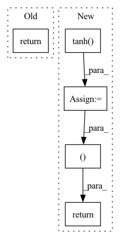

Pattern ID :1978

Before Change
embedded = self.embedding(x) // (L, bs, E)
output, hidden = self.rnn(embedded) // (L, bs, H), (1, bs, H)
return output, hidden
// }}}
// DecoderRNN {{{
After Change
// x: (T, bs, H)
embedded = self.embedding(x) // (T, bs, E)
output, hidden = self.rnn(embedded) // (T, bs, 2H), (2, bs, H)
hidden = torch.tanh(self.f_concat_h(torch.cat((hidden[-2], hidden[-1]), dim=1))) // (bs, H)
return output, hidden.squeeze(0) // (T, bs, 2H), (bs, H)
// }}}
// Attention {{{
In pattern: SUPERPATTERN
Frequency: 4
Non-data size: 5
Instances
Fragment ID: 13669415
Project Name: jojonki/beamsearch
Commit Name: 2a424a9181a3ddc12f4e4b5090b7542428efb30e
Time: 2020-05-04
Author: junki.ohmura@gmail.com
File Name: models.py
M Class Name: EncoderRNN
N Class Name: EncoderRNN
M Method Name: forward(2)
N Method Name: forward(2)
M Parent Class: nn.Module
N Parent Class: nn.Module
M File Name: models.py
N File Name: models.py
M Start Line: 25
M End Line: 25
N Start Line: 26
N End Line: 28
'>
Before Change
def forward(self, state):
a = F.relu(self.l1(state))
a = F.relu(self.l2(a))
return self.max_action * torch.tanh(self.l3(a))
class Critic(nn.Module):
After Change
logp_pi = torch.unsqueeze(logp_pi, dim=1)
action = self.max_action * torch.tanh(action)
mu = torch.tanh(mu) * self.max_action
return action, logp_pi, mu
def get_log_density(self, state, action):
a = F.relu(self.fc1(state))
a = F.relu(self.fc2(a))
'>
Fragment ID: 13669417
Project Name: ryanxhr/dwbc
Commit Name: 7bf8e90c7bbf238b9a80c6c033844d37a17e898e
Time: 2022-06-24
Author: xuhaoran8@jd.com
File Name: algos/DWBC.py
M Class Name: Actor
N Class Name: Actor
M Method Name: forward(2)
N Method Name: forward(2)
M Parent Class: nn.Module
N Parent Class: nn.Module
M File Name: algos/DWBC.py
N File Name: algos/DWBC.py
M Start Line: 22
M End Line: 23
N Start Line: 36
N End Line: 52
'>
Before Change
]))
def forward(self, x):
return self.disc(x)
class Generator(nn.Module):
def __init__(self, channels_noise, channels_img, features_g):
After Change
// Recognition network for latent variables has an additional layer
encoder = self.lrelu(self.linear2(x3))
z_prediction = self.tanh(self.linear3(encoder))
return x4, z_prediction
def truncated_normal_initializer(weight, mean=0, std=0.02):
size = weight.shape
tmp = weight.new_empty(size + (4,)).normal_()
'>
Fragment ID: 13669418
Project Name: ebartrum/lightning_gan_zoo
Commit Name: ada6e3d1398560a9cbcae15a4c5eb1425a2067e0
Time: 2021-03-31
Author: edward.bartrum@gmail.com
File Name: core/models/hologan_discriminator.py
M Class Name: Discriminator
N Class Name: Discriminator
M Method Name: forward(2)
N Method Name: forward(2)
M Parent Class: nn.Module
N Parent Class: nn.Module
M File Name: core/models/hologan_discriminator.py
N File Name: core/models/hologan_discriminator.py
M Start Line: 50
M End Line: 50
N Start Line: 57
N End Line: 70
'>
Before Change
log_std = self.std_clamp(log_std)
return mean, log_std
if __name__ == "__main__":
After Change
action = m.sample()
action = action.reshape(mean.shape)
action = action.tanh()
return action, std
if __name__ == "__main__":
use_cuda = torch.cuda.is_available()
'>
Fragment ID: 13669419
Project Name: tmdt-buw/karolos
Commit Name: 39ca64b6106c80c48f0605a15cde575769fad233
Time: 2020-04-23
Author: scheiderer@uni-wuppertal.de
File Name: agents/nnfactory/sac.py
M Class Name: Policy
N Class Name: Policy
M Method Name: forward(3)
N Method Name: forward(2)
M Parent Class: nn.Module
N Parent Class: nn.Module
M File Name: agents/nnfactory/sac.py
N File Name: agents/nnfactory/sac.py
M Start Line: 100
M End Line: 102
N Start Line: 95
N End Line: 115